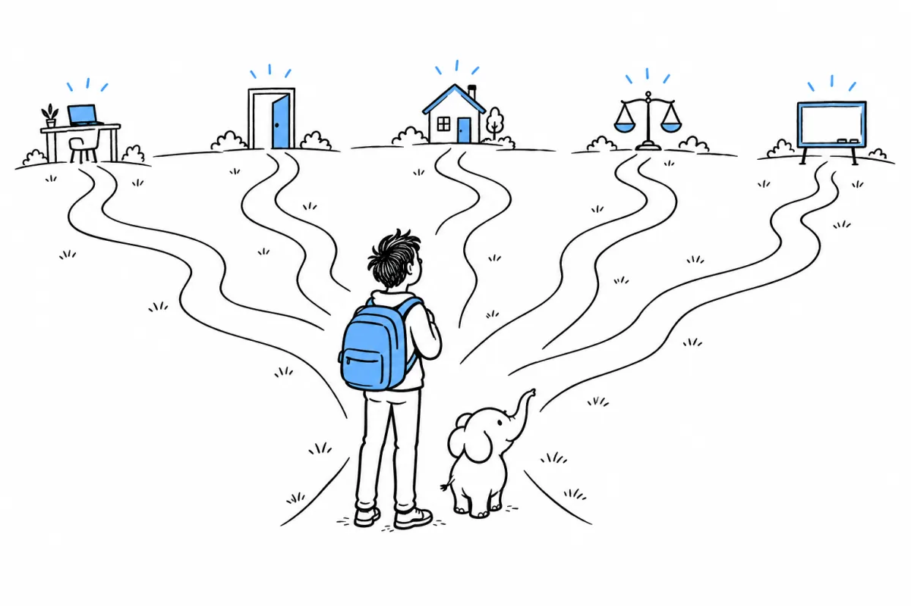
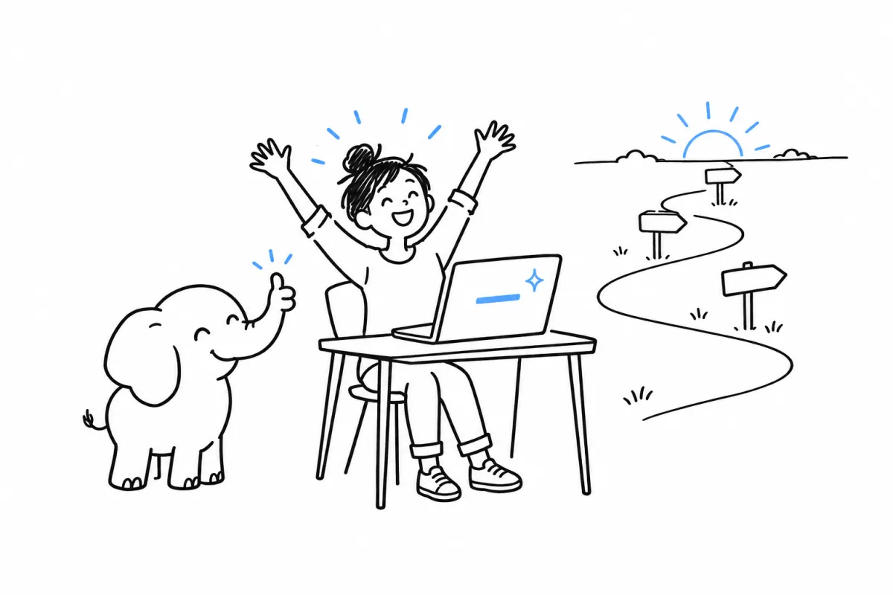
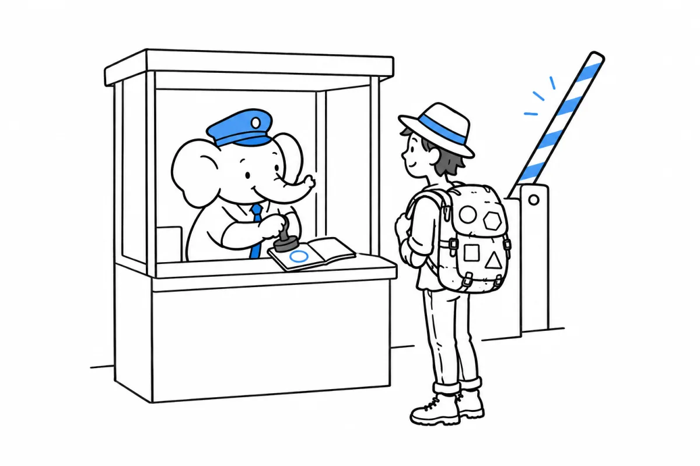
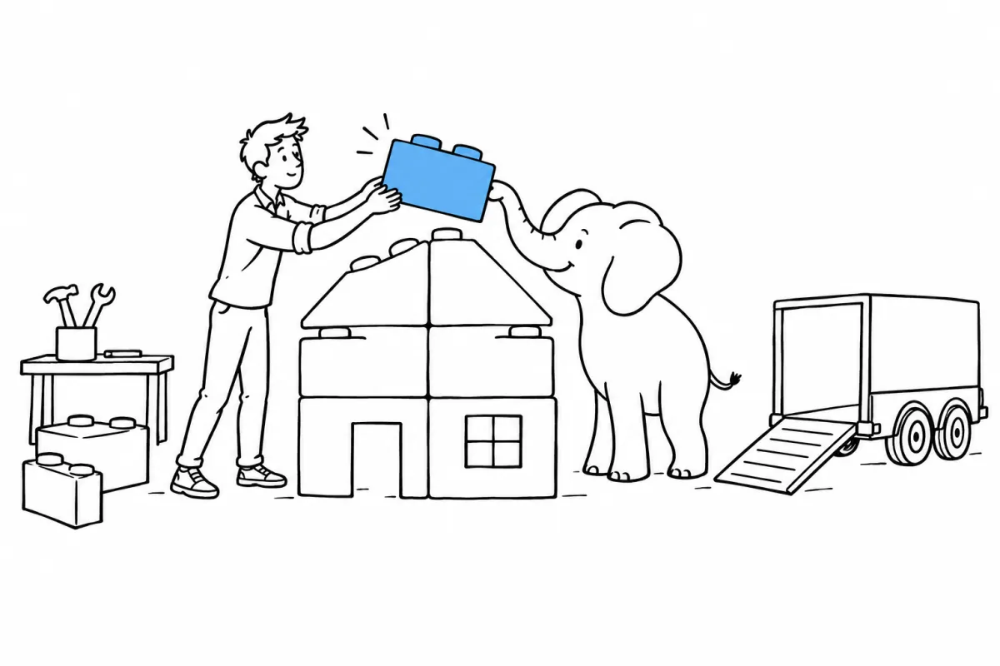
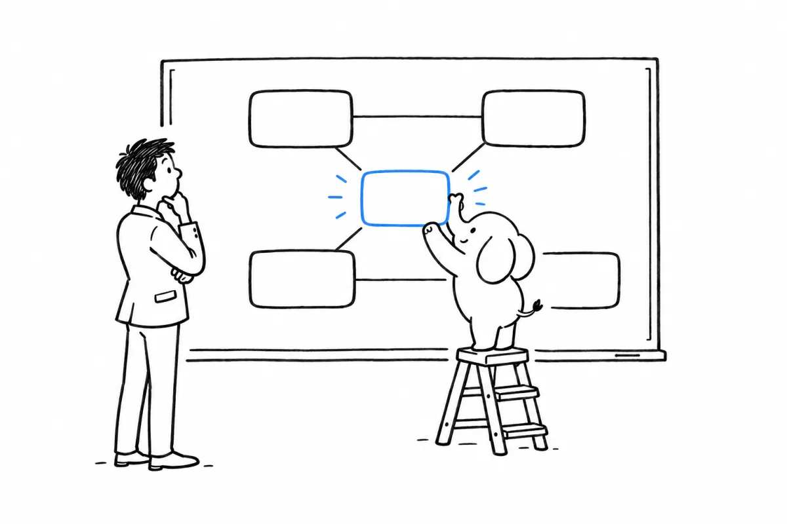

“Show me the code that gets me the job.”
A full course, at your own pace.
Read online PDF En français

“Skip the basics. Just tell me how PHP does it.”
Two to three hours.

“I'm not here for the language. I'm here to ship the feature.”
Read the chapter you need.
Read online
“Impress me with scale, not hype.”
Ninety minutes to two hours.

“Show me how PHP completes my architecture.”
Ninety minutes.